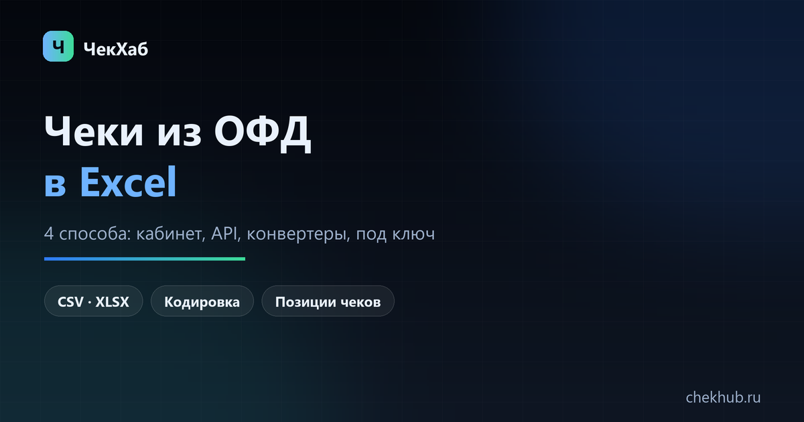
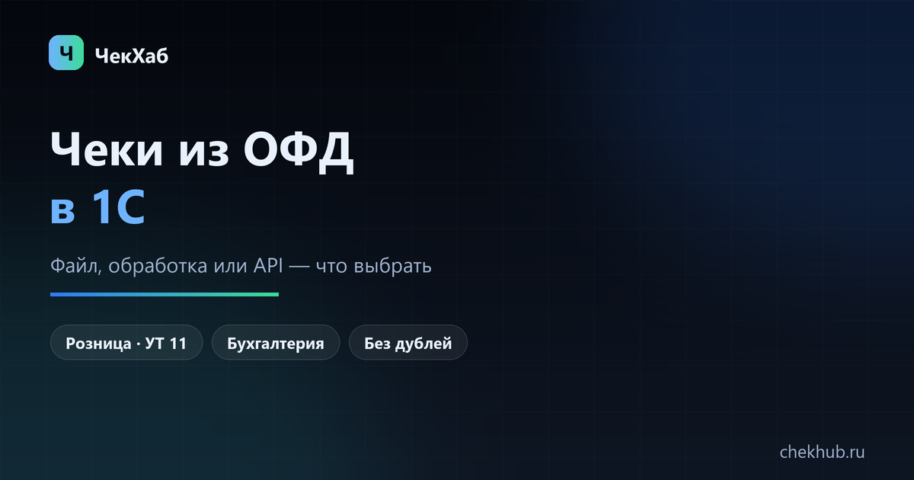
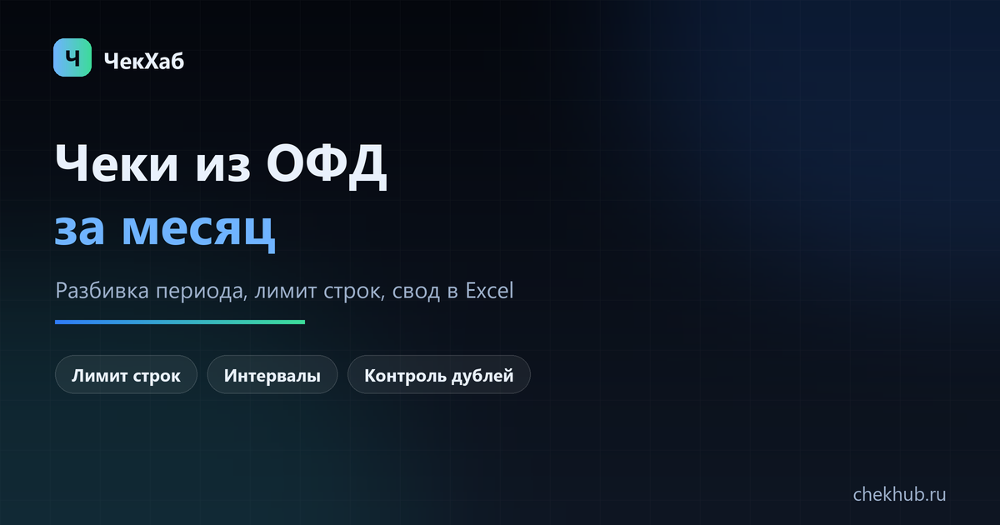
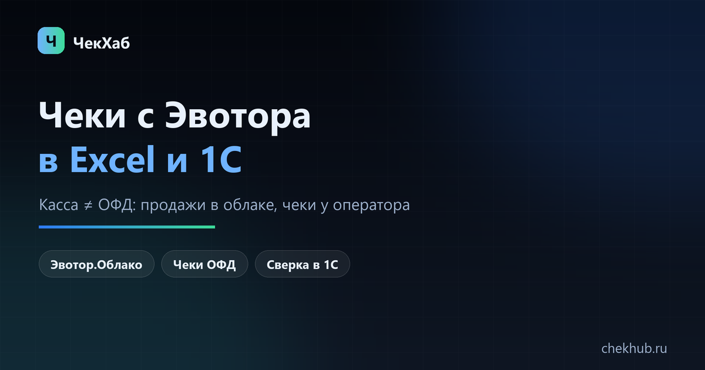
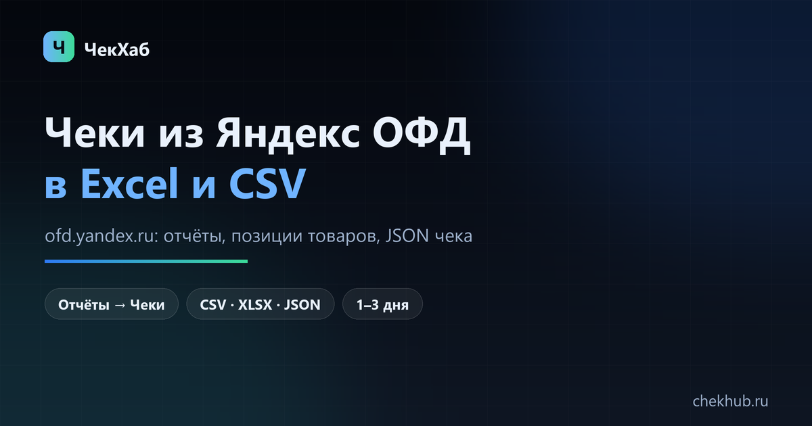
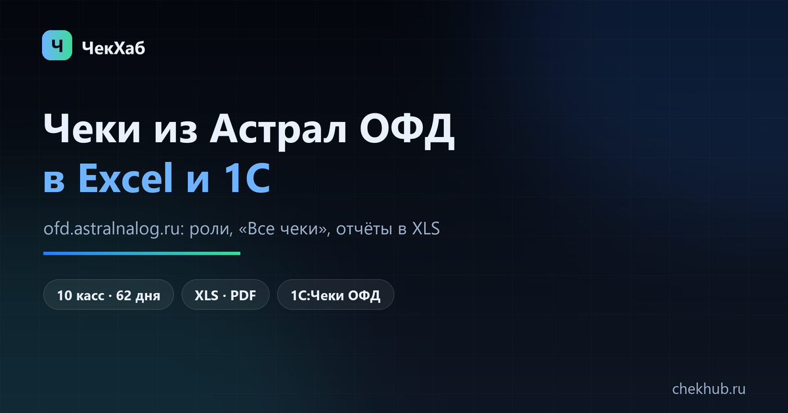

Инструкции по выгрузке чеков
Пишем о том, что реально встречается в работе: лимиты выгрузки, кодировки, дубли, позиции чеков и перенос данных в 1С.
Бесплатные инструменты
Всё считается в браузере: данные чеков и реквизиты не уходят на сервер.
По этому фильтру инструкций пока нет. Выберите «Общие» — там разборы по форматам и проблемам, которые не зависят от оператора, — или оставьте заявку: сделаем выгрузку за вас.

Как выгрузить чеки из ОФД в Excel: 4 способа и пошаговая инструкция
Личный кабинет ОФД, API, сервисы-конвертеры и выгрузка под ключ. Что делать, если Excel «съедает» колонки и суммы.

Как выгрузить чеки из ОФД в 1С: файл, обработка или обмен
От чего зависит способ загрузки, какие конфигурации поддерживают обмен и где обычно возникают ошибки.
Как выгрузить чеки из Платформы ОФД: личный кабинет и Excel
Какие отчёты есть в кабинете, как выбрать кассу и период, чем ограничена выгрузка и что делать, если нужны позиции чеков.
Как выгрузить чеки из ОФД с позициями (наименованиями товаров)
Чем отличаются шапка чека и позиции, какими способами забирают состав чека и как проверить, что приехали все наименования.

Как выгрузить чеки из ОФД за месяц: разбивка периода и свод в Excel
Что делать, если кабинет режет период и число строк: интервалы, склейка файлов без дублей, свод по дням и кассам.
Выгрузка чеков из ОФД за год: как собрать период в один файл
12 месяцев по каждой кассе, закрытые ККТ, склейка без дублей, лимит строк Excel и свод по месяцам.
Как выгрузить чеки из Такском ОФД: кабинет, Excel и API
Что есть в кабинете lk-ofd.taxcom.ru, как выгрузить отчёт по продажам, забрать позиции чеков и не задвоить строки.
Как выгрузить чеки из Первого ОФД (1-ОФД) в Excel
Кабинет lk.1-ofd.ru, сервис «Контроль выручки», синхронизация с 1С и что делать, если нужны позиции чеков.
Как свести выручку по чекам ОФД с банковской выпиской
Какие отчёты взять, как свести по датам, учесть эквайринг и возвраты и найти расхождение формулами Excel.
Чек ОФД для авансового отчёта: где взять и что приложить
Как найти электронный чек по ФД, ФПД или QR, что распечатать и приложить и что делать, если чек потерян.

ОФД не отдаёт чеки за прошлый период: причины и что делать
Шесть причин, почему кабинет не показывает старые чеки, и пошаговый порядок: договор, поддержка, разбивка периода, архив прежнего ОФД.
Как выгрузить чеки из ОФД в Google Таблицы
Импорт CSV, папка Drive, Apps Script с API и выгрузка под ключ — пошагово, с кодом и разбором частых ошибок.

Как выгрузить чеки из СБИС ОФД: кабинет, Excel и 1С
Где реестр чеков и сменные отчёты, чем ограничен период, как забрать позиции через API и не задвоить строки при склейке.

Как выгрузить чеки с Эвотора: облако и ОФД
Почему Эвотор — не ОФД, где продажи в «Эвотор.Облаке», чем они отличаются от фискальных документов и как перенести данные в 1С.

Как выгрузить чеки из Яндекс ОФД
Отчёты вместо «Документов», CSV и XLSX, позиции товаров в отчёте, JSON чека и доступ для бухгалтера.

Как выгрузить чеки из Астрал ОФД
Вход в единый ЛК, роли и права, «Все чеки», отчёты в XLS, лимит 10 касс и 62 дня, автоотчёты, 1С:Чеки ОФД.
Справочники
Если нужен не пошаговый разбор, а общая картина:
- Личный кабинет ОФД — адреса кабинетов пяти операторов и что в них можно выгрузить
- Что такое ОФД простыми словами — зачем нужен, как работает, сколько стоит
- Глоссарий ФФД — ФН, ФД, ФПД, смена, коррекция: что означают реквизиты чека
- Письмо в ОФД — готовый текст запроса на выгрузку, если поддержка просит «уточнить данные»
В работе
Готовим материалы по запросам из спроса:
- Возвраты и коррекции: как свести с выручкой
- Свод по выручке и сменам в одну таблицу
Не хочется разбираться самому?
Сделаем выгрузку под ключ: пришлёте доступ к ОФД — получите готовый Excel или загрузку в 1С.